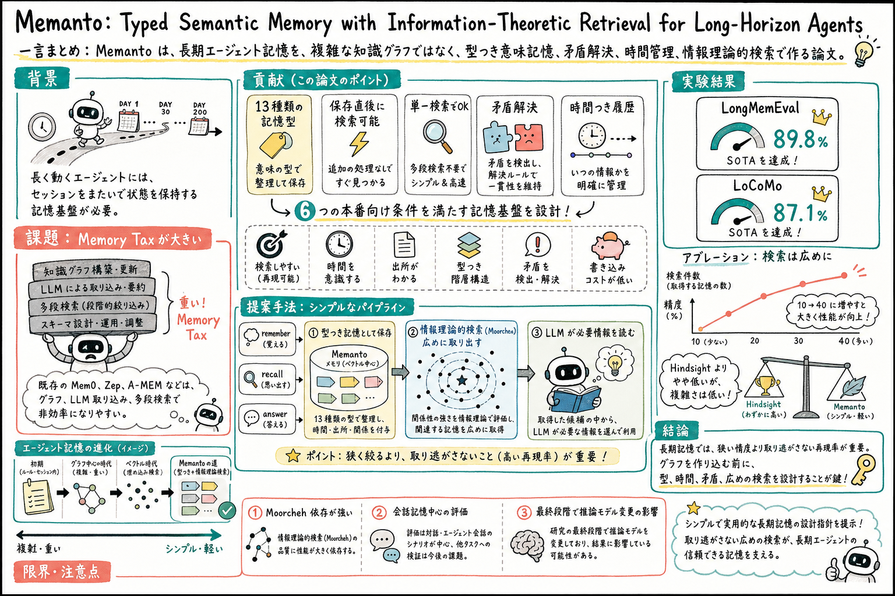

事実、好み、決定、約束、目標、出来事、指示、関係、状況、学び、観察、エラー、成果物参照のような種類で記憶を扱う。

どんな論文か
Memanto の問題意識は、長期エージェントの記憶アーキテクチャが複雑になりすぎているのではないか、というところにある。エージェントが複数セッションをまたいで動くには記憶が必要だが、保存のたびにLLMで実体抽出を行い、グラフを更新し、検索時にも複数の問い合わせを走らせる構成は、遅延、費用、保守負荷を積み上げる。
著者らはこの追加負荷を Memory Tax と呼ぶ。Mem0、Zep、A-MEM、Hindsight のような記憶システムはそれぞれ有効な工夫を持つ一方、本番運用では、取り込み遅延、グラフ同期、複数回検索、スキーマ管理が重くなる。Memanto は、その前提に対して、複雑な知識グラフが本当に必要なのかと問い直す。
提案の中心は、13種類の記憶型、矛盾解決、時間つき履歴、そして Moorcheh の情報理論的検索である。記憶を型で分け、必要なら決定、指示、状況、学び、エラーのような種類で絞り、古い情報と新しい情報がぶつかる場合は置き換えや併存を扱う。検索は単一クエリで広めに取り出し、強いLLMに読ませる。
評価では LongMemEval で 89.8%、LoCoMo で 87.1% を達成する。特に重要なのは、検索件数を10から40へ増やすだけで LongMemEval が大きく伸びた点である。長期記憶では、余計な情報を少し渡す害より、必要な断片を取り逃がす害の方が大きい、という設計思想が見えてくる。
ただし、論文の主張は Moorcheh の検索エンジンに強く依存している。また、評価は会話記憶中心で、最終段階では推論モデル変更の影響もある。読むときは、Memanto を万能な解というより、memory system を単純に保つための強い設計仮説として見るのがよい。
Memanto は、長期エージェントのための汎用記憶層を提案する論文である。正式な主張は、知識グラフや多段検索に頼らなくても、型つき意味記憶と高再現率の検索を組み合わせれば高品質なエージェント記憶を作れる、というもの。
システムとしては、エージェント、CLI、IDE、Web ダッシュボードなどから呼ばれる記憶ゲートウェイとして設計される。入口は remember、recall、answer のように分かれ、保存、検索、回答生成の流れを担う。
Memanto は、記憶を単なる会話ログではなく、型、時間、優先度、矛盾状態を持つ意味記憶として扱う。ここが、ただのベクトル検索との違いである。
課題と貢献
グラフ構築、LLM による取り込み、索引更新、複数回検索が、精度向上以上に運用負荷を増やす可能性を指摘する。
第三の貢献は、Moorcheh の情報理論的検索を使い、索引作成なし、保存後すぐ検索可能、単一クエリでの検索を目指したこと。
古い記憶を黙って消すのではなく、置き換え、併存、現在有効な状態、過去時点の状態を扱えるようにする。
第五の貢献は、LongMemEval と LoCoMo で段階的な切り分け実験を行い、どの設計要素が効いたかを示したこと。特に検索件数と再現率の影響が大きい。
手法のしくみ
1
記憶を書き込む時は、内容を型つきの意味記憶として保存する。記憶型により、後から『決定だけ』『指示だけ』『今の状況だけ』のように絞り込める。
2
新しい記憶が既存記憶と意味的にぶつかる場合は、矛盾として扱う。古い記憶を置き換える、古い記憶を残す、両方を矛盾つきで保持する、といった選択肢を持つ。
3
検索には Moorcheh の情報理論的検索を使う。通常の近似最近傍索引に強く依存するのではなく、クエリの不確実性をどれだけ減らすかという観点で、関連する記憶を取り出すと説明されている。
4
検索方針は再現率寄りである。狭く高精度に取るより、少しノイズが混じっても広めに取り出し、LLM が必要な情報を読む設計にする。
5
回答時は、取り出した記憶を根拠としてモデルに読ませる。関係グラフを事前に作り込むより、型、時間、矛盾、広めの検索を整えたうえで、推論モデルに整理させる立場である。
検証結果
最初の単純な設定では LongMemEval 56.6%、LoCoMo 76.2%。検索件数を10から40へ増やし、しきい値を緩めると LongMemEval 77.0%、LoCoMo 82.8% へ伸びる。この段階が最大の改善である。
Hindsight 由来のプロンプトに変えると LongMemEval 79.2%、LoCoMo 82.9%。さらに最大100件まで広げると LongMemEval 85.0%、LoCoMo 86.3% になる。
推論モデルを Gemini 3 に変えた最終設定では LongMemEval 89.8%、LoCoMo 87.1% を達成する。著者らは、ベクトル中心システムとして最先端水準だと位置づける。
Hindsight は LongMemEval 91.4%、LoCoMo 89.6% とさらに高いが、複数回検索と反省処理を使う。Memanto は少し低いが、単一検索で、保存時のLLM呼び出しなし、低い複雑さを売りにする。
論文では、1日に1万回の記憶操作を行う想定で、Memanto の日次コストを $0.50、Mem0-Graph を $2.32、Zep を $1.70 と見積もる。数字自体より、設計の複雑さが継続コストになるという見方が重要である。
限界と読みどころ
Moorcheh 依存が強い。Memanto の設計が強いのか、Moorcheh の情報理論的検索が強いのかは、この論文だけでは切り分けにくい。
評価は LongMemEval と LoCoMo が中心で、どちらも会話記憶に寄っている。研究エージェント、コード生成エージェント、複数エージェント協調などでは追加検証が必要である。
最終段階で推論モデルを Gemini 3 に変更しているため、記憶アーキテクチャの改善とモデルの読解力の改善が混ざる。切り分け実験では寄与が示されているが、慎重に読む必要がある。
13種類の記憶型は汎用的だが、個人 wiki、投資判断、論文ウォッチ、作業ログのような運用には、そのままでは粗い可能性がある。実務では領域ごとの型設計が必要になる。
読みながら見る図表や節
- Figure 1 は、2024年から2026年にかけて記憶システムが複雑化してきた流れの中で、Memanto をより単純なベクトル中心の別解として位置づける図である。
- Figure 2 と Table I は、本番向け記憶に必要な6条件を示す。検索可能性、時間認識、根拠追跡、型つき階層、矛盾検出、低コスト書き込みが骨格になる。
- Figure 3 と Figure 4 は、Memanto がローカルの常駐記憶サービスや記憶ゲートウェイとして動く構成を示す。CLI、IDE、Web、独自エージェントから呼ぶイメージで読むと分かりやすい。
- Figure 5 と Figure 6 は、切り分け実験の中心である。検索件数を増やす変更が大きく効き、長期記憶では再現率が重要だという主張を支えている。
- Figure 7 と Figure 8 は、精度と複雑さの比較である。最高精度だけでなく、どれだけ少ない仕組みで十分な性能を出すかを見るための図である。
次に読むなら
- StructMem と並べると、関係を事前に統合する設計と、型と検索で広めに取り出す設計の違いが見える。
- STALE と並べると、矛盾解決や現在状態の扱いを、古い記憶の退役判断としてより深く考えられる。
- EvolveMem と並べると、検索件数や読み方を固定せず、失敗ログから育てる方向へ広げられる。
- 実務に引くなら、まず記憶型を決め、次に矛盾時の扱いを決め、最後に検索件数を絞りすぎていないか評価するのが良い入口になる。
読後Q&A
この論文の中心問いは？
高品質なエージェント記憶を作るために、知識グラフや多段検索のような複雑な構成は本当に必要なのか、という問いである。
Memanto は何を提案している？
13種類の型つき意味記憶、矛盾解決、時間履歴、情報理論的検索を組み合わせた、長期エージェント向けの記憶層である。
Memory Tax とは？
記憶の取り込みや検索のために、LLM 実体抽出、グラフ更新、索引作成、複数回検索などが積み上がり、遅延、費用、保守負荷が増えること。
13種類の記憶型はなぜ重要？
記憶をただのテキストとして保存するのではなく、決定、指示、状況、学び、エラーのように分けることで、検索時の絞り込みや優先度づけ、矛盾解決がしやすくなる。
一番効いた改善は？
検索件数を10から40へ増やし、検索を広めにしたこと。LongMemEval ではこの変更が最大の改善を生んでいる。
なぜ広めの検索が効く？
長期記憶では、余計な情報が少し混じる害より、必要な記憶を取り逃がす害の方が大きいから。強いLLMは、広めに渡された候補から必要な断片を選べる可能性がある。
グラフはいらないと言っている？
少なくとも LongMemEval や LoCoMo のような会話記憶評価では、グラフの追加負荷に見合う改善が見えにくい、という主張に近い。すべての領域でグラフが不要だと証明したわけではない。
怪しい点は？
Moorcheh への依存が強いこと、評価が会話記憶中心であること、最終結果に推論モデル変更の影響が混ざることである。
個人アシスタント運用に持ち込むなら？
まず記憶型を作る。次に、古い好みや状態と新しい情報がぶつかった時に、黙って上書きせず衝突として扱う。さらに検索件数を絞りすぎていないかを評価する。
一言でいうと？
memory は、複雑なグラフを足す前に、型、時間、矛盾、再現率をちゃんと設計するだけでかなり強くなるかもしれない。